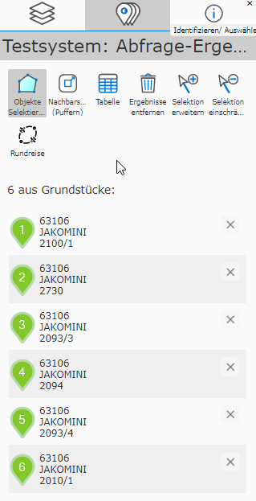
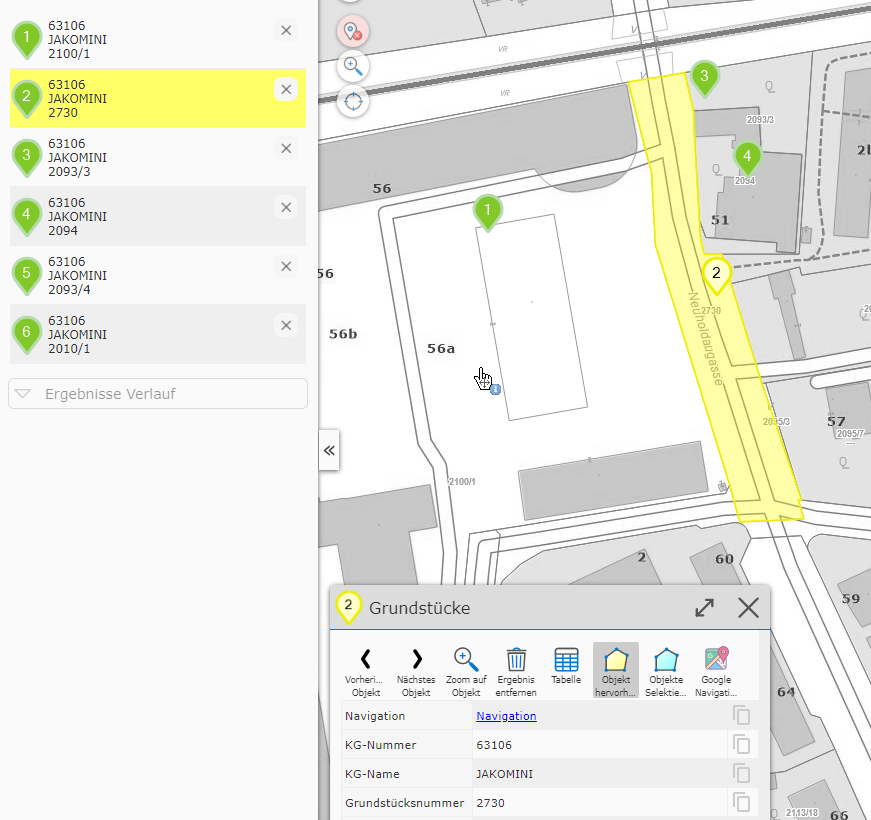
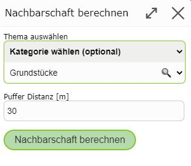
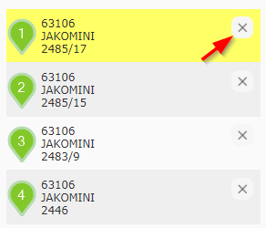

Ergebnisse im Mobile-Layout¶
Detailergebnisse¶
Liefert eine Suche oder Abfrage genau ein Ergebnis, wird neben der Markierung in der Karte (durch ein Marker Symbol) auch eine Dialog mit den Detailergebnissen (Sachdaten) geöffnet:

Die Sachdaten werden hier in einer Tabelle angezeigt. Die angezeigten Attribute sind bei jeder Themenebene unterschiedlich und werden vom Kartenautor festgelegt. Bei einer Adresse könnten die Attribute wie hier im Beispiel etwa Postleitzahl, Strasse, Hausnummer, Ort, Bezirk lauten. Neben den Attributnamen wird der entsprechende Wert angezeigt.
Bemerkung
Tipp: Ganz rechts wird in jeder Spalte noch ein graues Clipboard Symbol angezeigt. Damit kann der entsprechende Attributwert in die Zwischenablage kopiert und so weiter verarbeitet werden.
Bemerkung
Tipp: Wenn bei einem Thema sehr viele Attribute angezeigt werden, werden diese erst durch Scrollen nach unten sichtbar. Alternativ kann man die Höhe des Dialogs mit einem Klick auf die Titelzeile maximieren. Auf die gleiche Weise kann der Dialog auch wieder verkleinert werden.
Neben Attributwerten kann ein Abfrageergebnis auch noch weiterführende Links enthalten. Beispielsweise kann das Ergebnis einer Abfrage einer Gemeinde einen Link enthalten, der auf die Homepage der Gemeinde verweist. Diese werden dann ebenfalls in diesem Fenster angezeigt und können auch in die Zwischenablage kopiert werden.
Über der Ergebnistabelle befinden sich Werkzeuge. Je nach Abfrage können diese mehr oder weniger die hier dargestellten Werkzeuge sein.
Immer dabei sind die folgenden Werkzeuge:
Zoom auf Objekt: Durch einen Klick wird der Kartenausschnitt auf das Ergebnis angepasst.
Objekt hervorheben: Ist dieser Button ausgewählt, wird das aktuelle Objekt hervorgehoben (in der Regel gelb hinterlegt).
Objekte selektieren: Durch Drücken dieses Buttons, werden die Ergebnisse ausgewählt (selektiert, in der Regel cyan hinterlegt).
Bemerkung
Der Punkt Objekte selektieren bezieht sich auf alle Ergebnisse einer Abfrage und nicht nur auf das gerade angezeigte. Eine Selektion von Ergebnissen ist für die Weiterverarbeitung der Ergebnisse notwendig, beispielsweise beim Editieren von Geo-Objekten oder bei der Übernahme von Abfrageergebnissen ins Map-Markup (siehe später bei der Beschreibung der Ergebnisse). Außerdem ist die Selektion auch im Ausdruck sichtbar.
Ergebnisliste¶
Sind von einer Abfrage oder einer Suche mehrere Geo-Objekte betroffen, werden diese in der Karte angezeigt. Die Anzeige von Detailergebnissen erfolgt allerdings nicht sofort, weil immer nur ein Objekt in der Detailansicht angezeigt werden kann.
Bemerkung
Eine Ausnahme ist die Tabellenansicht aller Ergebnisse.
Darum werden die Ergebnisse im ersten Schritt als Liste mit wenigen (Vorschau) Attributen angezeigt:

Die Liste erscheint als eigener Tab im linken Kartenviewer Frame neben dem Darstellungs Tab. Im Tab erscheint auch eine Zahl, die der Anzahl der Ergebnisse entspricht und auch sichtbar ist, wenn der Tab gerade nicht aktiv ist.
Im Inhalt für diesen Tab werden die Ergebnisse angezeigt und einige Werkzeuge angeboten. Klickt man auf eines der (Vorschau) Ergebnisse, werden die entsprechenden Detailergebnisse angezeigt und der Kartenausschnitt angepasst. Dabei wird das Geo-Objekt automatisch hervorgehoben (gelb hinterlegt), sowohl in der Karte als auch in der Liste mit den Vorschauergebnissen:

Eine Zuordnung der (Vorschau) Ergebnisse mit den Geo-Objekten in der Karte kann ebenfalls über die Nummer im Kartenmarker erfolgen.
Bemerkung
Tipp: Eine weitere Möglichkeit, um die Detailergebnisse eines Geo-Objektes anzuzeigen, besteht durch einen Klick auf den entsprechenden Kartenmarker.
Werkzeuge in der Ergebnisliste¶
Oben in der (Vorschau) Ergebnisliste werden kontextabhängig weitere Werkzeuge angezeigt.

Objekte Selektieren: Entspricht dem Button, der auch bei den Detailergebnissen angezeigt wird. Damit werden alle Ergebnisse für die weitere Verarbeitung ausgewählt und mit cyan hinterlegt.
Nachbarschaftsberechnung (Puffern): Damit kann ein Puffer für die aktuellen Ergebnisse gelegt werden, aufgrund dessen Detailergebnisses dann eine neue Abfrage durchgeführt wird.
In einem Dialog wird davor noch abgefragt, welches Thema die Nachbarschaftsberechnung betrifft und wie groß der Puffer gewählt werden sollte:

Tablelle anzeigen: Damit werden alle Ergebnisse in einer Tabelle angezeigt.

Die Tabelle kann ebenfalls wieder mit einem Klick auf die Titelzeile des Dialogs maximiert werden. Klickt man auf eine Zeile, wird die Tabelle geschlossen, die Detailergebnisse angezeigt und auf das entsprechende Geo-Objekt gezoomt. Zusätzlich bietet die Tabelle diverse Exportmöglichkeiten, z.B. Export nach MS-Excel (über CSV).
Ergebnisse entfernen: Damit werden die Ergebnisse aus der Karte und der Vorschauansicht entfernt.
Bemerkung
Profitipp: Abfrage und Suchergebnisse können aus der Karte immer entfernt werden, auch wenn die Vorschauliste nicht aktiv ist. Sind Abfrageergebnisse in der Karte, erscheint bei den Schnellwerkzeugen in der Karte ein zusätzliches Symbol:

Ein Klick entfernt ebenfalls alle Ergebnismarker aus der Karte und der Vorschauliste.
Bemerkung
Tipp: Werden Abfrageergebnisse entfernt, sind sie innerhalb einer Kartenviewer Sitzung nicht komplett verloren. Über Ergebnisse Verlauf (siehe unten) kann immer wieder auf die Bereits durchgeführten Abfragen zugegriffen werden.
Ergebnisse erweitern/einschränken¶
Im Kartenviewer kann immer nur das Ergebnis einer Abfrage oder Suche angezeigt werden. Dennoch besteht die Möglichkeit, eine bestehendes Ergebnis nachträglich zu erweitern oder einzuschränken.
Am einfachsten eingeschränkt kann ein Ergebnis werden, indem der entsprechende Eintrag aus der Vorschauliste entfernt wird. Dazu wird (wenn mindestens zwei Ergebnisse vorhanden sind) ein X Symbol bei jedem Eintrag angezeigt:

Damit wird dieses Objekt sofort aus der Liste und der entsprechende Marker aus der Karte entfernt.
Eine weitere Möglichkeit ist die geographische Einschränkung/Erweiterung von Ergebnissen. Dazu ist mit dem entsprechenden Werkzeug ein bereits vorhandenes oder neues Objekt in der Karte anzuklicken.
Diese Werkzeuge befinden sich bei den Werkzeugen über der Vorschauliste und sind nur sichtbar, wenn die Ergebnisse ausgewählt (selektiert) sind:

Selektion erweitern: Werkzeug auswählen und in der Karte auf zusätzliche Geo-Objekte klicken.
Selection einschränken: Werkzeug auswählen und in die Karte auf selektierte Objekte klicken.
Bemerkung
Das Selektion einschränken Werkzeug ist nur sichtbar, solange mindestens zwei Ergebnisse vorliegen. Ein einzelnes Ergebnis kann nicht eingeschränkt sondern nur entfernt werden.
Bemerkung
Ob diese Werkzeuge angezeigt werden, obliegt dem Kartenautor. Wenn für eine Anwendung diese Funktionalität nicht erwünscht ist, werden diese nie angezeigt.
Ergebnisse Verlauf (History)¶
Wie oben schon erwähnt, können Abfrageergebnisse auf unterschiedliche Weise aus der Karte entfernt werden:
Entfernen Button über die Vorschau Liste klicken
Marker Entfernen Button bei den Schnellwerkzeugen (Profitipp)
Neue Suche/Abfrage auslösen entfernt automatisch die aktuell dargestellten Ergebnisse
Oft ist es allerdings wünschenswert, noch einmal auf bereits gemachte Such/Abfrageergebnisse zuzugreifen. Macht man beispielsweise eine Nachbarschaftsberechnung, werden die ursprünglichen Ergebnisse (auf denen die Nachbarschaftsberechnung beruht) überschrieben. Um später wieder auf diese Ergebnisse zugreifen zu können, dient der Ergebnisse Verlauf.
Der Verlauf wird im Tab für die Abfrageergebnisse angeführt (falls aktuell Ergebnisse angezeigt werden, befindet sich der Verlauf am Ende der Liste):

Alle bereits getätigten Abfragen (innerhalb einer Kartenviewer Sitzung) werden angezeigt. Der (Vorschau) Text gibt an, welche Themenebenen die Ergebnisse geliefert haben bzw. wie viele Geo-Objekte betroffen sind.
Das vorangestellte Symbol zeigt noch an, wie dieses Ergebnis erzeugt worden ist:
Fernglas Symbol: Das Ergebnis wurde über eine Suche erzeugt.
Puffer Symbol: Das Ergebnis wurde über eine Nachbarschaftsberechnung erzeugt.
Identifizieren Symbol: Das Ergebnis wurde über eine Abfrage erhalten.
Klickt man auf ein Verlaufselement, wird die Abfrage sofort wieder hergestellt. Möchte man ein Element aus dem Verlauf endgültig entfernen, kann das mit dem X Symbol erreicht werden. Die entsprechenden Abfrageergebnisse sind danach endgültig entfernt.